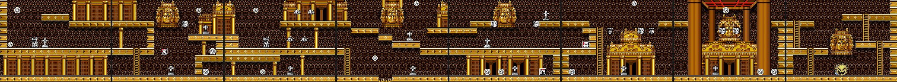
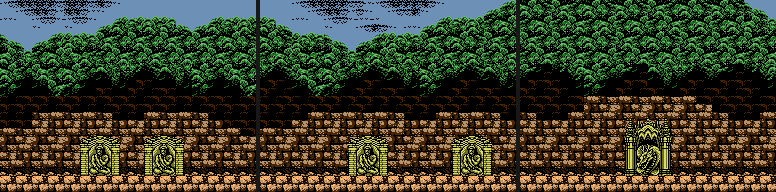
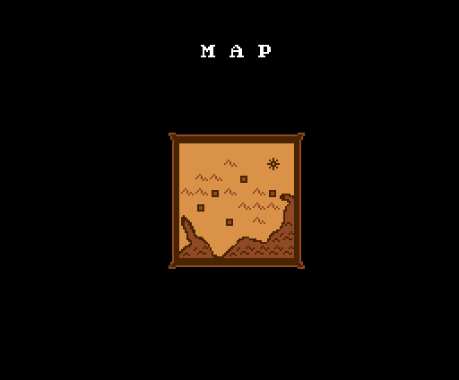
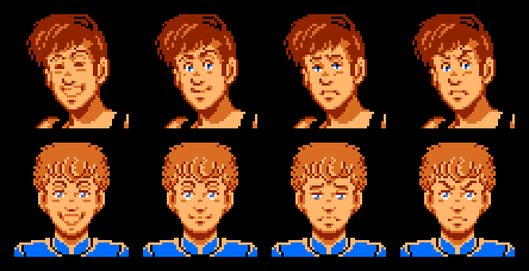
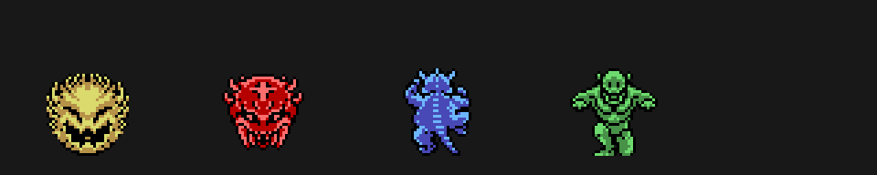
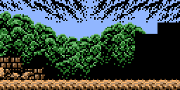

The Treasure of Usas (Konami, 1987, RC-753) es un juego de plataformas para MSX2 con dos protagonistas, Wit y Cles. Todo lo que hay en esta página sale de las tablas del cartucho.
El prólogo del título (p05:9849) cuenta que el tesoro de Usas se partió en cuatro con el paso de los siglos, y que los dos salen hacia la Ruta de la Seda a buscarlo. La primera ruina, según la escena de entrada, es la de Pegu, en Rangún (Birmania), que descubrió el profesor Atley (p04:752B).
Son cinco ruinas (0xC21D), cada una con cuatro fases y una sala de la estatua: 20 fases en total. En el marcador se llaman Pegu, Dunhuang, Alchi, Hunza y Agra (p15:BE3D). Cada pantalla son 8 × 6 metabloques de 4 × 4 fichas (p15:BEBF); el mapa de cada fase es un RLE de p10:5FFE, y los metabloques de cada ruina, otro de p10:6032. Las pantallas se colocan por sus vecinas (p09:B921).

Cada pantalla lleva lo que el juego pone al entrar: los enemigos que se crean ya y los nidos de los que salen los demás (p09:B12B), las trampas (p15:A4F9), los objetos (p12:B8BB) y, en su sala, el jefe (p09:BED3). De cada sprite se pinta el primer cuadro de su animación.
Las veinte fases, a tamaño real: 1, 2, 3, 4, 6, 7, 8, 9, 11, 12, 13, 14, 16, 17, 18, 19, 21, 22, 23, 24. Y solo con las fichas: 1, 6, 11, 16, 21 (las demás se llaman fase_NN.png).
Antes de cada fase hay una puerta que solo deja pasar a uno: «ONLY ONE PERSON MAY ENTER?» (p06:BB2F). Se elige quién entra y el otro se despide con una frase que depende de su ánimo (p12:B85E). Sin las cuatro llaves, la puerta del final no se abre («YOU HAVE TO GATHER FOUR KEYS»). Y si uno ha caído: «I CAPTURED YOUR FRIEND».

Al llegar a las ruinas 1-4, un mapa hace parpadear la ruina y escribe a máquina su clave: JUBA RUINS, HARAPPA RUINS, GANDHARA RUINS o MOHENJO DARO (p06:A2BB). En el título, CTRL o el botón B piden la clave (KEYWORD, p00:4643), y con ella se empieza en esa ruina (p00:45CB).

Cada uno tiene cuatro estados (feliz, tranquilo, triste y enfadado) y cada estado cambia su salto, su disparo o golpe y su forma de empujar: está en Hallazgos. Las caras de la pantalla INFORMATION cambian con el estado y mueven la boca cada 8 cuadros mientras hablan (p06:A774).

Las monedas van en BCD (p00:55B9) y salen de los objetos de las clases 1 a 4 y 12-13. En la pausa se gastan en SPD y JMP (p06:A0EA).
p02:82E9), puestos pantalla a pantalla por p09:B12B.p15:A4F9).p09:BED3), con 16 de vida más en cada ruina (p03:AD28). En la sala de la estatua hay cinco tablillas (tipo 25), una por ruina (p02:8DB9).
Las cuatro piedras se juntan, Wit y Cles entran en el templo de Usas y ponen la piedra en la estatua (p04:73D2). En japonés el final sigue: el profesor Atley descubre que la estatua era el detonador de una bomba atómica de una civilización antigua, y que las piedras se habían repartido por el mundo para que nadie la usara. Remata con «¡¿そんなあほな!?» (¡no puede ser!). La tabla inglesa de las dos últimas escenas apunta a esos mismos textos en japonés (p04:745D).
